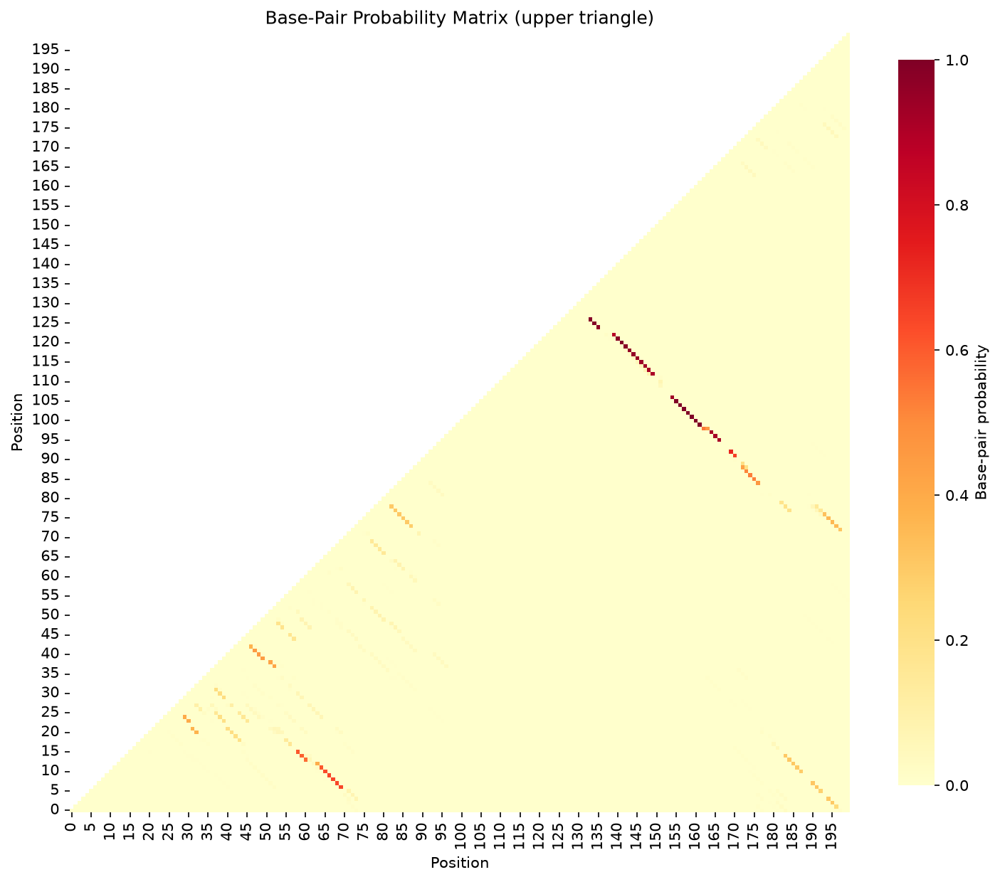

| Stem ID | Positions | Length (bp) | Mean P(pair) | Flag |
|---|---|---|---|---|
| 1 | 7-70 ... 13-64 | 7 | 0.603 | SOFT |
| 2 | 14-61 ... 16-59 | 3 | 0.587 | SOFT |
| 3 | 21-33 ... 22-32 | 2 | 0.374 | FLOPPY |
| 4 | 24-31 ... 25-30 | 2 | 0.400 | FLOPPY |
| 5 | 38-53 ... 39-52 | 2 | 0.424 | FLOPPY |
| 6 | 40-50 ... 43-47 | 4 | 0.433 | FLOPPY |
| 7 | 73-198 ... 77-194 | 5 | 0.342 | FLOPPY |
| 8 | 78-185 ... 80-183 | 3 | 0.193 | FLOPPY |
| 9 | 85-177 ... 89-173 | 5 | 0.491 | FLOPPY |
| 10 | 92-171 ... 93-170 | 2 | 0.692 | SOFT |
| 11 | 96-167 ... 99-164 | 4 | 0.802 | SOFT |
| 12 | 100-162 ... 107-155 | 8 | 0.991 | FIRM |
| 13 | 113-150 ... 123-140 | 11 | 0.946 | FIRM |
| 14 | 125-136 ... 127-134 | 3 | 0.982 | FIRM |

Upper triangle shows probability of base-pairing between positions i and j
Key principle: Ask for base-pair probabilities (or the full ensemble), not only the minimum free energy structure.
FoldTrust uses ViennaRNA's partition function to compute the Boltzmann ensemble of all possible secondary structures and their base-pairing probabilities. The MFE structure is parsed into stems, and each stem's reliability is assessed by averaging the pair probabilities of its constituent base pairs.
Limitations: Thermodynamic models operate under simplified assumptions (37°C in 1M NaCl). In-cell conditions, co-transcriptional folding, RNA-binding proteins, and post-transcriptional modifications can alter structure. Experimental probing (SHAPE, DMS) and functional assays remain essential for validation.